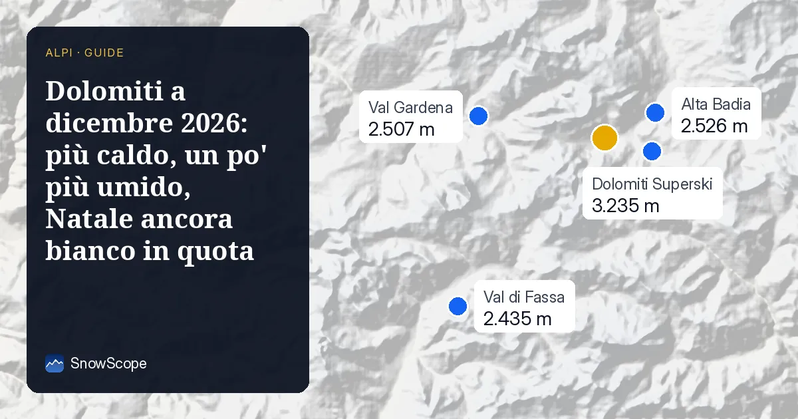
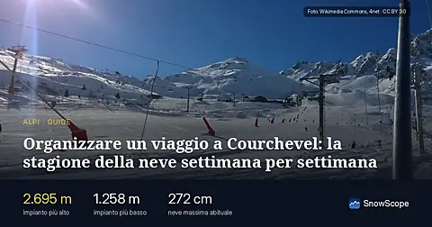
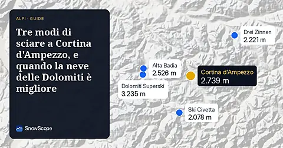

Dolomiti a dicembre 2026: più caldo, un po' più umido, Natale ancora bianco in quota
Dicembre sulle Dolomiti si prospetta più caldo e leggermente più umido rispetto agli inverni passati. La mappa SnowScope non mostra un segnale chiaro su gran parte della catena, con il 42 % che propende verso neve più scarsa, eppure il Natale rimane molto probabilmente bianco alle quote medie.
Le previsioni neve in tempo reale per Dolomites nell'app SnowScopeAltezza neve, allerte powder e mappa 3D, gratis.

La mappa neve racconta una storia mista
Quando confrontiamo l'area delle Dolomiti zona per zona con i suoi dicembre passati, il quadro è incerto. Su tutta la catena, il 58 % non mostra un segnale chiaro in nessuna direzione. Il rimanente 42 % propende verso minore, soprattutto nelle vallate settentrionali della Pusteria e a sud-est intorno al Cadore. Nessuna parte della catena mostra una tendenza a neve più abbondante.
Le probabilità di neve fresca superiore alla media nel corso di dicembre rimangono modeste: tra il 34 % e il 46 %, con un valore medio del 41 %. In altre parole, più neve fresca del solito è possibile ma non l'esito più probabile.
Cosa rende dicembre più caldo
Cinquantuno previsioni stagionali del centro meteorologico europeo concordano sul fatto che dicembre sarà circa 1,7 °C più caldo del clima di riferimento dei dicembre passati. Otto su dieci simulazioni mostrano riscaldamento. La precipitazione si colloca al 12 % sopra il totale usuale di dicembre di 70 mm, ma l'insieme è diviso: il 53 % delle simulazioni è più umido.
Sulle Dolomiti, le forti nevicate arrivano quando le tempeste spingono da sud. Quando il mese è più caldo, la quota neve sale più in alto, e la precipitazione che potrebbe essere neve alle quote basse cade come pioggia invece. Le quote medie e alte catturano più neve, mentre le vallate dipendono sempre più dalla neve artificiale.


Previsione neve fresca e spessore a dicembre
Sulle principali aree sciistiche—Val Gardena, Alta Badia, Cortina d'Ampezzo, Val di Fassa e Seiser Alm—un dicembre tipico porta 24 cm di neve fresca a media quota. Questa previsione prevede 21 cm. Al 31 dicembre, lo spessore usuale è 33 cm; l'outlook è 30 cm. Questi valori sono vicini alla norma, entro le naturali variazioni da anno ad anno.
La probabilità di concludere il mese con più neve della media è del 41 %. Questo significa che mentre risultati scarsi sono possibili, la previsione non indica un dicembre particolarmente magro. Molto dipenderà da quando arrivano le tempeste e da quanto forti sono.
Neve a Natale in Val Gardena
La Val Gardena a media quota (1882 m) ha avuto almeno 5 cm di neve il giorno di Natale in 42 degli ultimi 45 inverni—una probabilità del 93 %. Questa previsione mantiene questa tendenza: il 91 % dell'insieme stagionale porta un Natale bianco. Lo spessore atteso il 25 dicembre è 25 cm, leggermente meno della media di 27 cm, ma comunque ben sciabile.
I pendii più alti delle Dolomiti sono ancora più affidabilmente bianchi a Natale. Le basi di valle in un dicembre caldo sono le zone incerte; dipendono tipicamente dalla preparazione e dalla neve artificiale.
Come questo dicembre si confronta con i dicembre passati
I dicembre passati con pattern previsionale più simile a questo outlook sono 2014, 2023 e 2013. Nessuno di questi è stato particolarmente ricco di neve o povero; sono stati mesi ordinari con precipitazioni e spessori nella media. Questo fissa il tono per la pianificazione: aspettati un dicembre nella fascia media del range tipico.
Una avvertenza importante: un singolo sistema temporalesco da sud può alterare il totale del mese di 10 cm o più. La previsione a 7 giorni sarà la tua guida migliore se un sistema minaccia; osserva il timing e la traiettoria con attenzione.
Consigli per sciatori
- Pianifica le giornate dei primi di dicembre sugli impianti più alti e le creste, dove la neve è più affidabile che nelle vallate.
- Controlla la previsione a 7 giorni settimanalmente per sistemi temporaleschi che si muovono da sud, che possono portare neve significativa sulle Dolomiti.
- Confronta la mappa SnowScope tra diverse vallate: la quota neve può variare di diverse centinaia di metri tra la Pusteria e la Val di Fassa durante un episodio caldo.
- Se hai piani per il Natale, prenota il terreno a media e alta quota con fiducia; le piste di valle dipenderanno più dalla preparazione.
- Indossa più strati per il caldo durante il giorno ma aspettati condizioni variabili; un'anomalia di 1,7 °C significa che alcune piste potrebbero avere crosta di pioggia al primo mattino prima che si consolidino.
Su questi numeri
Le altezze neve delle località sono la neve più alta sui pendii superiori alla data indicata; sono stime per un'area, non una misura in un punto. Le previsioni possono cambiare. Leggi sempre il bollettino valanghe ufficiale prima del fuoripista.
Cita questo articolo
Per ricerca, didattica o stampa: numeri e grafici sono liberamente riutilizzabili con licenza CC BY 4.0 citando così.
SnowScope (2026), Dolomiti a dicembre 2026: più caldo, un po' più umido, Natale ancora bianco in quota, https://snowscope.app/blog/it/2026/11/dolomites-december-2026-snow-outlook.html, consultato il 2026-11-10
SnowScope (Atlas Labs). (2026, November 10). Dolomiti a dicembre 2026: più caldo, un po' più umido, Natale ancora bianco in quota. SnowScope snow reports. https://snowscope.app/blog/it/2026/11/dolomites-december-2026-snow-outlook.html
BibTeX
@misc{snowscope2026dolomitesdecember2026sno,
author = {{SnowScope (Atlas Labs)}},
title = {Dolomiti a dicembre 2026: più caldo, un po' più umido, Natale ancora bianco in quota},
year = {2026},
month = nov,
howpublished = {\url{https://snowscope.app/blog/it/2026/11/dolomites-december-2026-snow-outlook.html}},
note = {Published 2026-11-10 12:17 UTC; accessed 2026-11-10}
}· CC BY 4.0 · Metodi, dati e strumenti →
Segui Dolomites
Gratis: un messaggio quando arriva la neve e il meteo ogni mattina.
Altri bollettini neve

Quando prenotare Courchevel e le 3 Vallées, quale paese scegliere e dove la neve resiste, da 46 inverni passati.

Cortina d'Ampezzo in tre modi: Tofana, Faloria-Cristallo e Cinque Torri-Lagazuoi, con 46 inverni di dati sulla neve a tre quote.

Bonneval-sur-Arc si trova a 1.794 m nella valle dell'Arc, chiusa dal Col dell'Iseran in inverno. Lo spessore di neve varia da 99 cm in basso a 335 cm in alto. Dati da 46 inverni passati, novembre 2026.